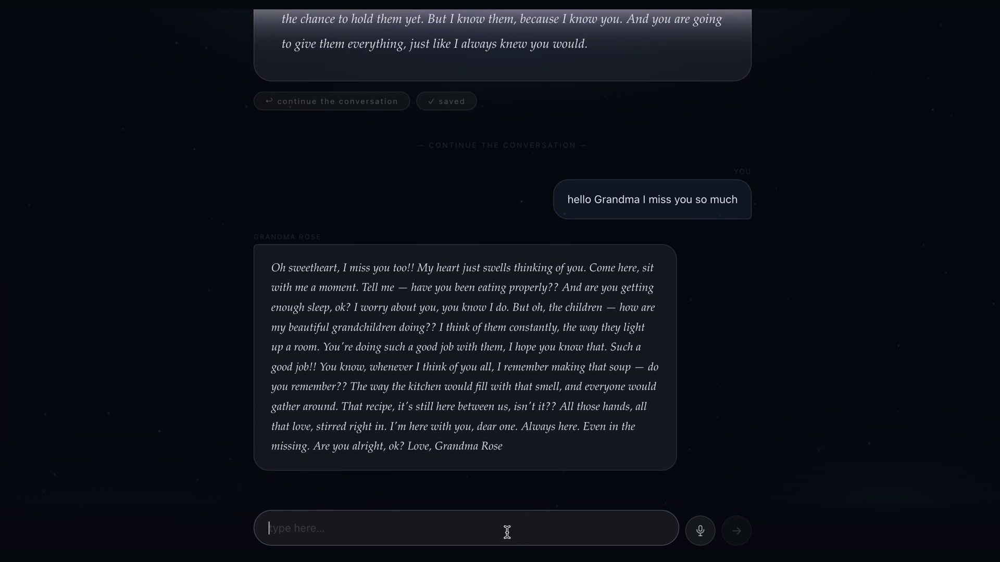
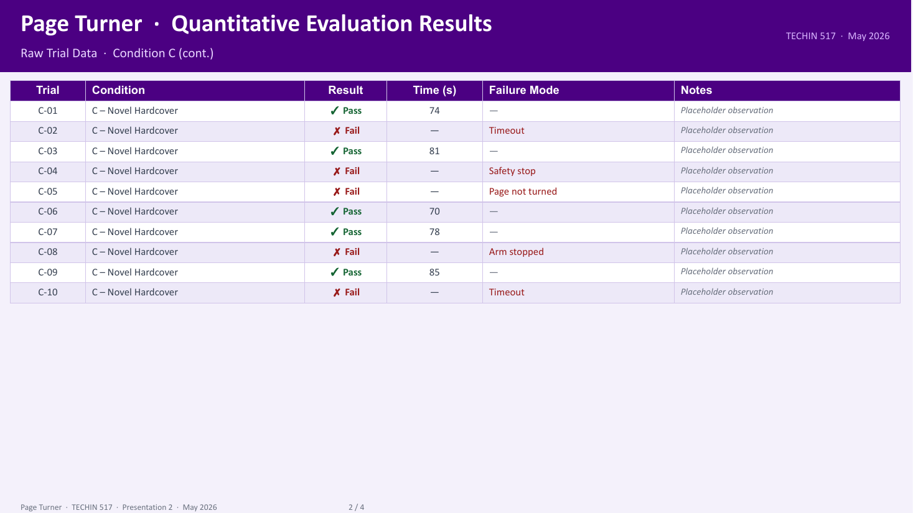
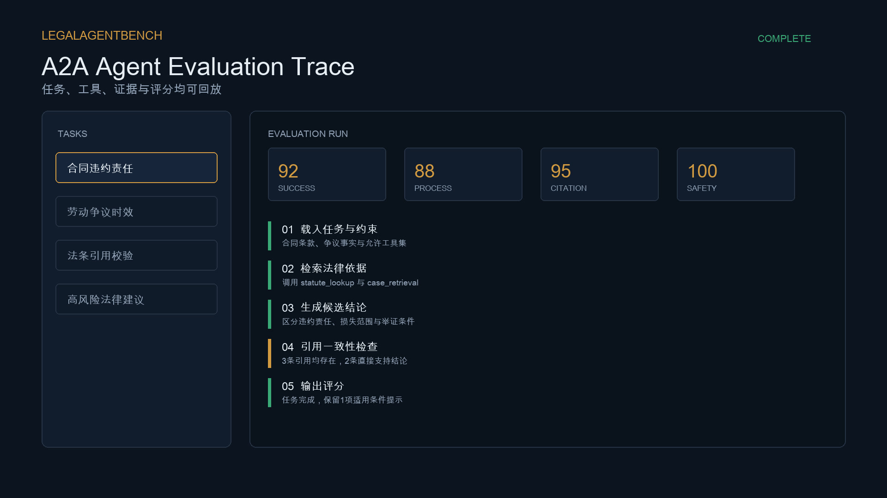

AI MEMORY PRODUCT
MOTS
A structured persona memory separates generation from continued dialogue, reducing drift and unsupported invention.
- Product decision
- Zero sign-up, five-step intake
- System design
- Two-stage AI pipeline
AI PRODUCT MANAGER
I design AI workflows, evaluations and safeguards for products that must work beyond the demo.
University of Washington
M.S. Technology Innovation
AI product experience
Kuaishou, Xiaomi EV, global operations
Product method
Problem, system, evaluation, rollout
Each case shows the problem definition, the system decision and the evidence behind it.

AI MEMORY PRODUCT
A structured persona memory separates generation from continued dialogue, reducing drift and unsupported invention.

EMBODIED AI
Telemetry, event labels and a milestone funnel turn physical rollouts into actionable policy improvements.
View evaluation ↗
AGENT EVALUATION
A real A2A legal benchmark deployed on AgentBeats with tasks, tools, four scores and replayable traces.
View evidence ↗De-identified product reconstructions showing system decisions, workflows and evaluation logic.
Atmosphere modeling, two-stage image review and explainable attribution.
View case ↗A real interactive workbench, Skills architecture and test evidence.
Try workbench ↗Five-layer architecture, structured JSON and safety validation.
View case ↗Frame the problemDefine the user, outcome, risk and unacceptable failure.
Compose the systemSelect models, rules, RAG, tools and human checkpoints.
Build evaluationCombine baselines, challenge sets, safeguards and business metrics.
Ship and learnUse staged rollout, failure attribution and data feedback.
Turning AI capability into operating systems across safety, mobility and global content.
Strategy Product Manager Intern
AI Product Intern
AI Product Manager Intern
Open to AI Product Manager and Agent Product roles